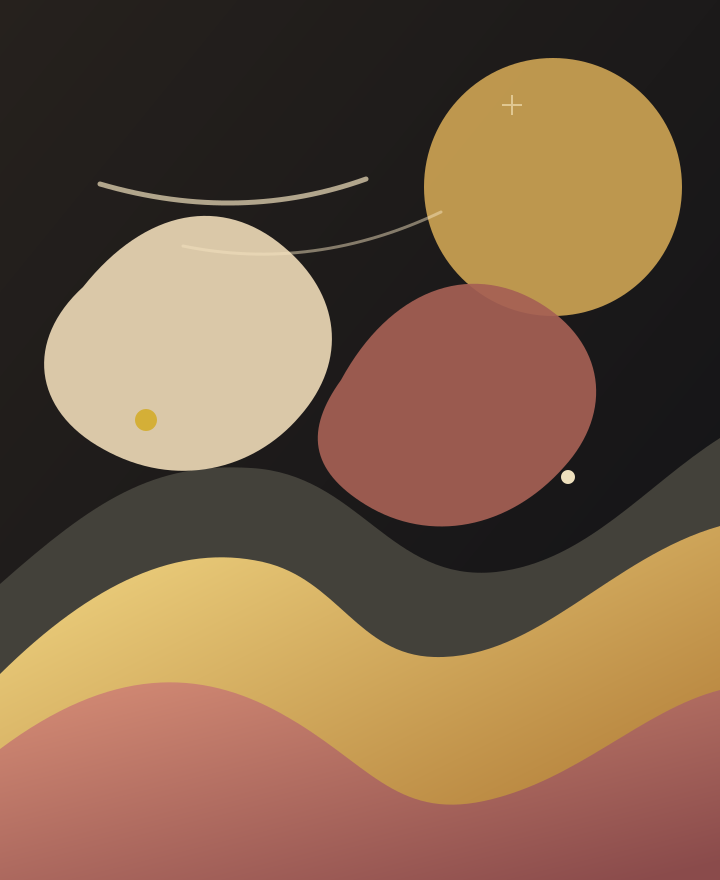
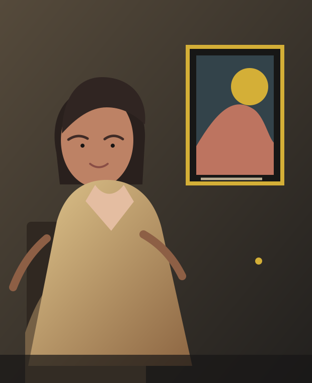
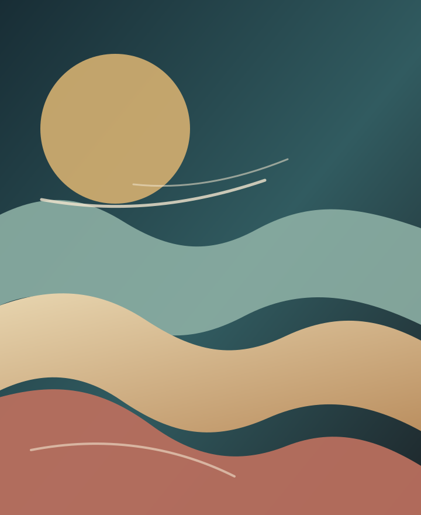

Umbral dorado
Una composición sobre el instante previo al cambio.
Portfolio de demostración · Artista visual
Pinto lo que permanece cuando las palabras se disuelven.
Una exploración de color, memoria y formas orgánicas. Obras imaginarias creadas para mostrar cómo puede cobrar vida un portfolio artístico.
Descubrir mi trayectoria01 04 GRANADA, ES

Una mirada hacia dentro

El arte es una forma de escuchar lo que todavía no sabemos nombrar.
Alma Ríos es un personaje ficticio creado para este proyecto educativo. En este portfolio de muestra, su práctica artística reúne capas de color, gestos espontáneos y referencias a los paisajes del sur.
Su trabajo imagina un lugar entre lo íntimo y lo abierto: formas que invitan a detenerse, mirar de nuevo y construir una historia propia.
Una práctica en movimiento
Un recorrido ficticio que puedes sustituir por la historia real del artista.
Una composición sobre el instante previo al cambio.

Capas y transparencias inspiradas en la calma del paisaje.
HITOS DE EJEMPLO
Los hitos y las obras son contenido de muestra, no una biografía real.
Nos encontramos pronto
Fechas ficticias de demostración. Sustitúyelas antes de publicar.
PRESENTACIÓN DE DEMOSTRACIÓN
Una conversación imaginaria sobre las historias que caben dentro de una obra.
Espacio de demostración
Granada, España
PRESENTACIÓN DE DEMOSTRACIÓN
Recorrido de ejemplo por el proceso creativo y sus materiales.
Galería de demostración
Málaga, España
¿Te interesa compartir una idea?
Escríbeme